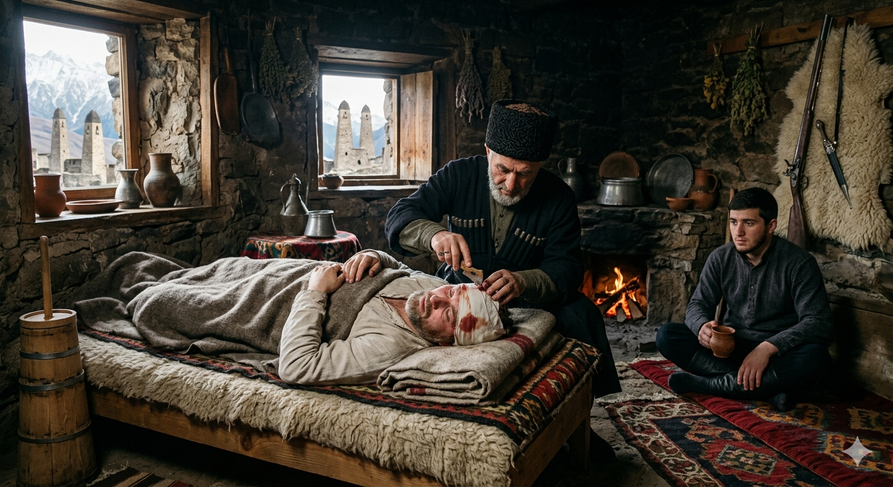

И.А. Дахкильгов. Хьехаме дувцарш - поучительные рассказы-притчи.
И.А. Дахкильгов. Хьехаме дувцарш - поучительные рассказы-притчи. Из ингушского фольклора.

Керта чу хьоа баларе
Дикка хьал-торо йолаш вахаш хиннав цхьа хьаьрхо. ГӀаьрал лелача наха Ӏехаваьв из: - Фу деш вагӀа хьо ер дом буаш? Къонах иштта хул? Хьахьажал тхога, балхах кулг ца тохаш тхо мишта аттеи дике дах! Бакълув-кха шо, аьнна, хьаьрхо Ӏехавеннав. Ший хьайра ехкай, герзаш ийцад. Царех олла а венна, гӀаьрахоех дӀакхийттав. Цхьанахьа гӀаьр еча, акхарех вувр вувш, веддар водаш, еррига гӀаьр йохаяьй. Кертах пхо а боаллаш, са увзаш вола хьаьрхо цхьанне кӀалхараваьккхав. Лор воалаваьв. Кертах гам хьекха волавеннав из. Юхе латтача цхьанне аьннад: - ШортагӀа хьакха из гам, хьоа лозабергба Ӏа цун. Циггач цхьа бахьан сакхетам чу венача хьаьрхочо аьннад, йоах: - Хьаккхашта, хьайна ма та-а, вӀалла юха а ца озалуш, дӀахьакха Ӏа хьай гам. Хьоа баларе-ма, сай дика тоаенна йола хьайра а ехка, гӀаьр мича гӀоргвар со.
РУССКИЙ
Если бы в голове были мозги
Хорошо, в достатке, жил себе некий мельник. Но как-то разбойники соблазнили его: "Что ты возишься в этой пыли? Мужское ли это занятие? Наши руки не дотрагиваются ни до какой работы, а глянь, какие мы молодцы, и какие мы богатые!" Соблазнился мельник, поверил им, продал свою мельницу, накупил оружия и вошел в разбойничью шайку. При очередном набеге ей дали такого жара, что многие погибли, других ранило, остальные разбежались. Ранило и мельника. В его голове застряла пуля. Привели лекаря, и он скребком начал стачивать кость черепа. Кто-то из рядом стоящих попросил лекаря быть поосторожнее и не повредить мозг. В это время несколько очнувшийся мельник сказал: "Скреби себе и не тревожься. Были бы в моей голове мозги, разве бы я продал мельницу и пошел бы в разбойники".
ENGLISH
If only he'd had a brain in his head!
There once was a miller who lived a comfortable, prosperous life. But one day, some robbers tempted him. 'Why are you toiling away in all this dust? Is that a man's job? Our hands don't touch a single bit of work, yet just look at how well we live!" Tempted by this, the miller sold his mill, bought weapons, and joined the band of robbers. During their next raid, however, they were defeated, with many killed, some wounded and the rest fleeing. The miller was wounded too. A bullet had lodged in his head. A doctor was brought in and began to scrape away at the skull with a tool. Someone standing nearby asked the doctor to be careful not to damage the brain. At that moment, the miller, who had regained consciousness somewhat, said: "Scrape away and don't worry. If I had any brains, would I have sold the mill and joined the bandits?"
НОХЧИЙН
Коьртан чохь хье белахьара
Дикка хьал-таро йолуш вехаш хилла цхьа хьархо. Талор лелочу наха Ӏехавина иза: - ХӀун деш воллу хьо хӀара гам йууш? Къонах иштта хуьлу? Схьахьажал тхоьга, балхах куьг ца тухуш тхо муха атта а дика а деха! Бакълоь-кх шу, аьлла, хьархо Ӏехавелла. Шен хьера йоьхкина, герзаш эцна. Царах олла а велла, гӀеранах дӀакхетта. Цхьанахь талор дича, хӀокхарех вуьйриг вуьйш, веддарг водуш, йерриг гӀера йохийна. Коьртах пха а боллуш, са уьйзуш вола хьархо цхьаммо кӀелхьара ваьккхина. Лор валийна. Коьртах гам хьекха волавелла иза. Йуххе лаьттачу цхьаммо аьлла: - Меллаша хьакха и гам, хье лозабир бу ахь цуьнан. Циггахь цхьана бахьаница са-кхетам чу веанчу хьархочо аьлла, бох: - Эвхьаза, хьайна ма тов, цуьрг йуха а ца озалуш, дӀахьакха ахь хьай гам. Хье белахьара-м, сай дика тоелла йолу хьера а йоьхкина, гӀеране мичахь гӀурвар со.
ПОГОВОРКИ
БӀы боккха хилча, фос кӀезига хул. Чем больше дружина, тем меньше доля добычи каждого. The larger the band, the smaller each man's share of the spoils. Тоба йоккха хилча, хӀонц кӀезиг хуьлу.Йоархш лакх яр аьнна, баа сом хилац: модж йӀаьха яр аьнна, хьаькъал совнагӀа хилац. Сорняк вырастает высоким, да плодов на нем не бывает; борода отрастает длинной, да ума она не прибавляет. A weed grows tall but bears no fruit; a beard grows long but adds no wisdom. Йараш лекха йар аьлла, баа стом хилац; мож йеха йар аьлла, хьекъал совнах хилац.Корта боккха хилар пайда бац, из баьсса хуле. Нет толку от большой головы, если она пустая. There's no use in a big head if it's empty. Корта боккха хилар пайда бац, иза баьсса хилахь.Къона волаш ца хинна хьаькъал къавелча (модж кӀайеннар аьнна) хиннадац. Не было ума в молодости, так и к старости (к седине) не прибавится. The wisdom lacking in youth won't appear in old age either. КӀант волуш ца хилла хьекъал къанвелча (мож кӀаййеллер аьлла) хилла дац.Къуна говзалах говзал хиннаяц, къуна маькарлонах а маькарло хиннаяц. Мастерство вора – не мастерство, ловкость вора – не ловкость. A thief's skill is no true skill; a thief's cunning is no true cunning. Къун говзаллах говзалла хилла йац, къун мекараллах мекарло хилла йац.Сов дукха хестадеча хӀамах ма теша. Не верь тому, то чрезмерно хвалят. Don't believe what is praised too much. Сов дукха хестадечу хӀуманах ма теша.Уйла йоацаш даь хӀама бала боацаш къаьстадац. Необдуманный поступок влечет за собою беду. A thoughtless act always brings trouble in its wake. Ойла йоцуш дина хӀума бала боцуш къаьстина дац.Харцонна тӀехьаэтта дика хулачул, бокъонна тӀехьаэтта моастагӀа хилар тол. Чем идти неправедным путем, чтобы прослыть хорошим, лучше быть ославленным, но пойти по праведному пути. Better to be reviled while walking a righteous path than praised while walking a false one. Харцонна тӀаьхьахӀоьттина дика хуьлучул, бакъонна тӀаьхӀоьттина мостагӀа хилар тоьлу.Хьайра а ехка тӀем тӀа вахар вийнав, хьаьр тӀа ваьгӀар висав. Продавший мельницу и ушедший на войну погиб; оставшийся при мельнице уцелел. He who sold the mill and went off to war perished; he who stayed by the mill survived. Хьер а йохкина тӀаме вахнарг вийна, хьеран тӀехь ваьхнарг висна.Шийца моастагӀал лоац топ-турпца эйхьаза вувлачо. Сам себе враг тот, кто шутит с оружием. He who jokes carelessly with weapons becomes his own worst enemy. Шеца мостагӀал лоцу топ-турца эвхьаза вуьйлучо.Ӏовдала саг вира а вовз. Дурака и ишак узнает. Even a donkey can recognise a fool. Ӏовдал стаг вирана а воьвза.Ӏовдалча кертах кхийтта кхера баьттӀа дӀабахаб. Камень, попавший в голову дурака, разлетелся надвое. The stone that struck a fool's head split in two. Ӏовдалчун коьртах кхетта кхера баьттӀа дӀабахна.